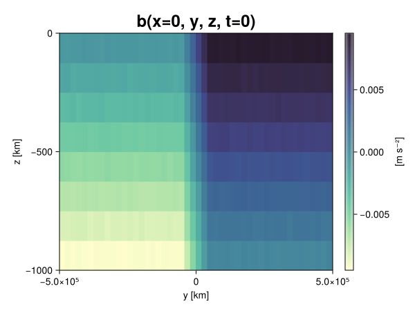
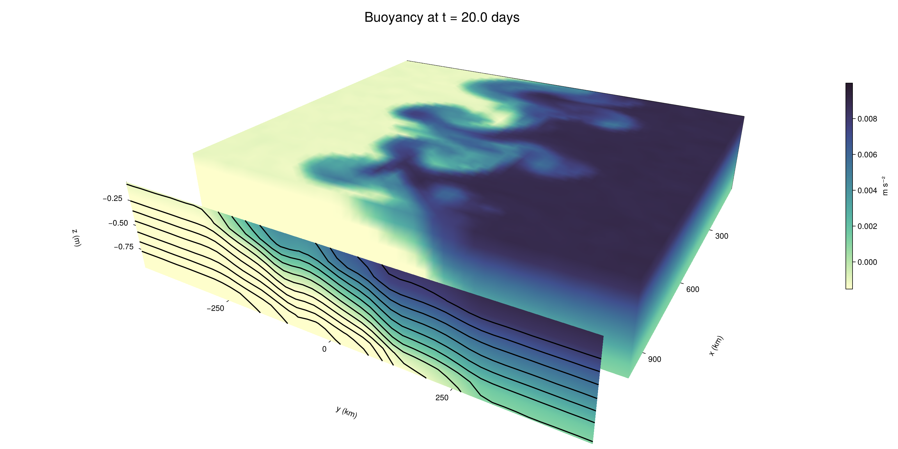

Baroclinic adjustment
In this example, we simulate the evolution and equilibration of a baroclinically unstable front.
Install dependencies
First let's make sure we have all required packages installed.
using Pkg
pkg"add Oceananigans, CairoMakie"using Oceananigans
using Oceananigans.UnitsGrid
We use a three-dimensional channel that is periodic in the x direction:
Lx = 1000kilometers # east-west extent [m]
Ly = 1000kilometers # north-south extent [m]
Lz = 1kilometers # depth [m]
grid = RectilinearGrid(size = (48, 48, 8),
x = (0, Lx),
y = (-Ly/2, Ly/2),
z = (-Lz, 0),
topology = (Periodic, Bounded, Bounded))48×48×8 RectilinearGrid{Float64, Periodic, Bounded, Bounded} on CPU with 3×3×3 halo
├── Periodic x ∈ [0.0, 1.0e6) regularly spaced with Δx=20833.3
├── Bounded y ∈ [-500000.0, 500000.0] regularly spaced with Δy=20833.3
└── Bounded z ∈ [-1000.0, 0.0] regularly spaced with Δz=125.0Model
We built a HydrostaticFreeSurfaceModel with an ImplicitFreeSurface solver. Regarding Coriolis, we use a beta-plane centered at 45° South.
model = HydrostaticFreeSurfaceModel(; grid,
coriolis = BetaPlane(latitude = -45),
buoyancy = BuoyancyTracer(),
tracers = :b,
momentum_advection = WENO(),
tracer_advection = WENO())HydrostaticFreeSurfaceModel{CPU, RectilinearGrid}(time = 0 seconds, iteration = 0)
├── grid: 48×48×8 RectilinearGrid{Float64, Periodic, Bounded, Bounded} on CPU with 3×3×3 halo
├── timestepper: QuasiAdamsBashforth2TimeStepper
├── tracers: b
├── closure: Nothing
├── buoyancy: BuoyancyTracer with ĝ = NegativeZDirection()
├── free surface: ImplicitFreeSurface with gravitational acceleration 9.80665 m s⁻²
│ └── solver: FFTImplicitFreeSurfaceSolver
├── advection scheme:
│ ├── momentum: WENO reconstruction order 5
│ └── b: WENO reconstruction order 5
└── coriolis: BetaPlane{Float64}We start our simulation from rest with a baroclinically unstable buoyancy distribution. We use ramp(y, Δy), defined below, to specify a front with width Δy and horizontal buoyancy gradient M². We impose the front on top of a vertical buoyancy gradient N² and a bit of noise.
"""
ramp(y, Δy)
Linear ramp from 0 to 1 between -Δy/2 and +Δy/2.
For example:
```
y < -Δy/2 => ramp = 0
-Δy/2 < y < -Δy/2 => ramp = y / Δy
y > Δy/2 => ramp = 1
```
"""
ramp(y, Δy) = min(max(0, y/Δy + 1/2), 1)
N² = 1e-5 # [s⁻²] buoyancy frequency / stratification
M² = 1e-7 # [s⁻²] horizontal buoyancy gradient
Δy = 100kilometers # width of the region of the front
Δb = Δy * M² # buoyancy jump associated with the front
ϵb = 1e-2 * Δb # noise amplitude
bᵢ(x, y, z) = N² * z + Δb * ramp(y, Δy) + ϵb * randn()
set!(model, b=bᵢ)Let's visualize the initial buoyancy distribution.
using CairoMakie
# Build coordinates with units of kilometers
x, y, z = 1e-3 .* nodes(grid, (Center(), Center(), Center()))
b = model.tracers.b
fig, ax, hm = heatmap(view(b, 1, :, :),
colormap = :deep,
axis = (xlabel = "y [km]",
ylabel = "z [km]",
title = "b(x=0, y, z, t=0)",
titlesize = 24))
Colorbar(fig[1, 2], hm, label = "[m s⁻²]")
fig
Simulation
Now let's build a Simulation.
simulation = Simulation(model, Δt=20minutes, stop_time=20days)Simulation of HydrostaticFreeSurfaceModel{CPU, RectilinearGrid}(time = 0 seconds, iteration = 0)
├── Next time step: 20 minutes
├── Elapsed wall time: 0 seconds
├── Wall time per iteration: NaN days
├── Stop time: 20 days
├── Stop iteration : Inf
├── Wall time limit: Inf
├── Callbacks: OrderedDict with 4 entries:
│ ├── stop_time_exceeded => Callback of stop_time_exceeded on IterationInterval(1)
│ ├── stop_iteration_exceeded => Callback of stop_iteration_exceeded on IterationInterval(1)
│ ├── wall_time_limit_exceeded => Callback of wall_time_limit_exceeded on IterationInterval(1)
│ └── nan_checker => Callback of NaNChecker for u on IterationInterval(100)
├── Output writers: OrderedDict with no entries
└── Diagnostics: OrderedDict with no entriesWe add a TimeStepWizard callback to adapt the simulation's time-step,
conjure_time_step_wizard!(simulation, IterationInterval(20), cfl=0.2, max_Δt=20minutes)Also, we add a callback to print a message about how the simulation is going,
using Printf
wall_clock = Ref(time_ns())
function print_progress(sim)
u, v, w = model.velocities
progress = 100 * (time(sim) / sim.stop_time)
elapsed = (time_ns() - wall_clock[]) / 1e9
@printf("[%05.2f%%] i: %d, t: %s, wall time: %s, max(u): (%6.3e, %6.3e, %6.3e) m/s, next Δt: %s\n",
progress, iteration(sim), prettytime(sim), prettytime(elapsed),
maximum(abs, u), maximum(abs, v), maximum(abs, w), prettytime(sim.Δt))
wall_clock[] = time_ns()
return nothing
end
add_callback!(simulation, print_progress, IterationInterval(100))Diagnostics/Output
Here, we save the buoyancy, $b$, at the edges of our domain as well as the zonal ($x$) average of buoyancy.
u, v, w = model.velocities
ζ = ∂x(v) - ∂y(u)
B = Average(b, dims=1)
U = Average(u, dims=1)
V = Average(v, dims=1)
filename = "baroclinic_adjustment"
save_fields_interval = 0.5day
slicers = (east = (grid.Nx, :, :),
north = (:, grid.Ny, :),
bottom = (:, :, 1),
top = (:, :, grid.Nz))
for side in keys(slicers)
indices = slicers[side]
simulation.output_writers[side] = JLD2OutputWriter(model, (; b, ζ);
filename = filename * "_$(side)_slice",
schedule = TimeInterval(save_fields_interval),
overwrite_existing = true,
indices)
end
simulation.output_writers[:zonal] = JLD2OutputWriter(model, (; b=B, u=U, v=V);
filename = filename * "_zonal_average",
schedule = TimeInterval(save_fields_interval),
overwrite_existing = true)JLD2OutputWriter scheduled on TimeInterval(12 hours):
├── filepath: baroclinic_adjustment_zonal_average.jld2
├── 3 outputs: (b, u, v)
├── array type: Array{Float64}
├── including: [:grid, :coriolis, :buoyancy, :closure]
├── file_splitting: NoFileSplitting
└── file size: 31.6 KiBNow we're ready to run.
@info "Running the simulation..."
run!(simulation)
@info "Simulation completed in " * prettytime(simulation.run_wall_time)[ Info: Running the simulation...
[ Info: Initializing simulation...
[00.00%] i: 0, t: 0 seconds, wall time: 29.172 seconds, max(u): (0.000e+00, 0.000e+00, 0.000e+00) m/s, next Δt: 20 minutes
[ Info: ... simulation initialization complete (28.845 seconds)
[ Info: Executing initial time step...
[ Info: ... initial time step complete (17.766 seconds).
[06.94%] i: 100, t: 1.389 days, wall time: 36.855 seconds, max(u): (1.254e-01, 1.228e-01, 1.547e-03) m/s, next Δt: 20 minutes
[13.89%] i: 200, t: 2.778 days, wall time: 908.560 ms, max(u): (2.191e-01, 1.653e-01, 1.722e-03) m/s, next Δt: 20 minutes
[20.83%] i: 300, t: 4.167 days, wall time: 913.435 ms, max(u): (2.939e-01, 2.177e-01, 1.604e-03) m/s, next Δt: 20 minutes
[27.78%] i: 400, t: 5.556 days, wall time: 856.905 ms, max(u): (3.718e-01, 2.971e-01, 1.787e-03) m/s, next Δt: 20 minutes
[34.72%] i: 500, t: 6.944 days, wall time: 852.625 ms, max(u): (4.507e-01, 4.152e-01, 1.946e-03) m/s, next Δt: 20 minutes
[41.67%] i: 600, t: 8.333 days, wall time: 788.867 ms, max(u): (5.947e-01, 6.365e-01, 2.090e-03) m/s, next Δt: 20 minutes
[48.61%] i: 700, t: 9.722 days, wall time: 737.211 ms, max(u): (7.605e-01, 9.774e-01, 2.818e-03) m/s, next Δt: 20 minutes
[55.56%] i: 800, t: 11.111 days, wall time: 780.472 ms, max(u): (1.014e+00, 1.416e+00, 4.685e-03) m/s, next Δt: 20 minutes
[62.50%] i: 900, t: 12.500 days, wall time: 934.135 ms, max(u): (1.178e+00, 1.448e+00, 4.846e-03) m/s, next Δt: 20 minutes
[69.44%] i: 1000, t: 13.889 days, wall time: 902.294 ms, max(u): (1.402e+00, 1.298e+00, 5.235e-03) m/s, next Δt: 20 minutes
[76.39%] i: 1100, t: 15.278 days, wall time: 811.672 ms, max(u): (1.517e+00, 1.338e+00, 5.796e-03) m/s, next Δt: 20 minutes
[83.33%] i: 1200, t: 16.667 days, wall time: 828.422 ms, max(u): (1.466e+00, 1.478e+00, 4.906e-03) m/s, next Δt: 20 minutes
[90.28%] i: 1300, t: 18.056 days, wall time: 934.438 ms, max(u): (1.384e+00, 1.465e+00, 4.177e-03) m/s, next Δt: 20 minutes
[97.22%] i: 1400, t: 19.444 days, wall time: 898.834 ms, max(u): (1.452e+00, 1.450e+00, 4.620e-03) m/s, next Δt: 20 minutes
[ Info: Simulation is stopping after running for 1.033 minutes.
[ Info: Simulation time 20 days equals or exceeds stop time 20 days.
[ Info: Simulation completed in 1.033 minutes
Visualization
All that's left is to make a pretty movie. Actually, we make two visualizations here. First, we illustrate how to make a 3D visualization with Makie's Axis3 and Makie.surface. Then we make a movie in 2D. We use CairoMakie in this example, but note that using GLMakie is more convenient on a system with OpenGL, as figures will be displayed on the screen.
using CairoMakieThree-dimensional visualization
We load the saved buoyancy output on the top, north, and east surface as FieldTimeSerieses.
filename = "baroclinic_adjustment"
sides = keys(slicers)
slice_filenames = NamedTuple(side => filename * "_$(side)_slice.jld2" for side in sides)
b_timeserieses = (east = FieldTimeSeries(slice_filenames.east, "b"),
north = FieldTimeSeries(slice_filenames.north, "b"),
top = FieldTimeSeries(slice_filenames.top, "b"))
B_timeseries = FieldTimeSeries(filename * "_zonal_average.jld2", "b")
times = B_timeseries.times
grid = B_timeseries.grid48×48×8 RectilinearGrid{Float64, Periodic, Bounded, Bounded} on CPU with 3×3×3 halo
├── Periodic x ∈ [0.0, 1.0e6) regularly spaced with Δx=20833.3
├── Bounded y ∈ [-500000.0, 500000.0] regularly spaced with Δy=20833.3
└── Bounded z ∈ [-1000.0, 0.0] regularly spaced with Δz=125.0We build the coordinates. We rescale horizontal coordinates to kilometers.
xb, yb, zb = nodes(b_timeserieses.east)
xb = xb ./ 1e3 # convert m -> km
yb = yb ./ 1e3 # convert m -> km
Nx, Ny, Nz = size(grid)
x_xz = repeat(x, 1, Nz)
y_xz_north = y[end] * ones(Nx, Nz)
z_xz = repeat(reshape(z, 1, Nz), Nx, 1)
x_yz_east = x[end] * ones(Ny, Nz)
y_yz = repeat(y, 1, Nz)
z_yz = repeat(reshape(z, 1, Nz), grid.Ny, 1)
x_xy = x
y_xy = y
z_xy_top = z[end] * ones(grid.Nx, grid.Ny)Then we create a 3D axis. We use zonal_slice_displacement to control where the plot of the instantaneous zonal average flow is located.
fig = Figure(size = (1600, 800))
zonal_slice_displacement = 1.2
ax = Axis3(fig[2, 1],
aspect=(1, 1, 1/5),
xlabel = "x (km)",
ylabel = "y (km)",
zlabel = "z (m)",
xlabeloffset = 100,
ylabeloffset = 100,
zlabeloffset = 100,
limits = ((x[1], zonal_slice_displacement * x[end]), (y[1], y[end]), (z[1], z[end])),
elevation = 0.45,
azimuth = 6.8,
xspinesvisible = false,
zgridvisible = false,
protrusions = 40,
perspectiveness = 0.7)Axis3()We use data from the final savepoint for the 3D plot. Note that this plot can easily be animated by using Makie's Observable. To dive into Observables, check out Makie.jl's Documentation.
n = length(times)41Now let's make a 3D plot of the buoyancy and in front of it we'll use the zonally-averaged output to plot the instantaneous zonal-average of the buoyancy.
b_slices = (east = interior(b_timeserieses.east[n], 1, :, :),
north = interior(b_timeserieses.north[n], :, 1, :),
top = interior(b_timeserieses.top[n], :, :, 1))
# Zonally-averaged buoyancy
B = interior(B_timeseries[n], 1, :, :)
clims = 1.1 .* extrema(b_timeserieses.top[n][:])
kwargs = (colorrange=clims, colormap=:deep, shading=NoShading)
surface!(ax, x_yz_east, y_yz, z_yz; color = b_slices.east, kwargs...)
surface!(ax, x_xz, y_xz_north, z_xz; color = b_slices.north, kwargs...)
surface!(ax, x_xy, y_xy, z_xy_top; color = b_slices.top, kwargs...)
sf = surface!(ax, zonal_slice_displacement .* x_yz_east, y_yz, z_yz; color = B, kwargs...)
contour!(ax, y, z, B; transformation = (:yz, zonal_slice_displacement * x[end]),
levels = 15, linewidth = 2, color = :black)
Colorbar(fig[2, 2], sf, label = "m s⁻²", height = Relative(0.4), tellheight=false)
title = "Buoyancy at t = " * string(round(times[n] / day, digits=1)) * " days"
fig[1, 1:2] = Label(fig, title; fontsize = 24, tellwidth = false, padding = (0, 0, -120, 0))
rowgap!(fig.layout, 1, Relative(-0.2))
colgap!(fig.layout, 1, Relative(-0.1))
save("baroclinic_adjustment_3d.png", fig)
Two-dimensional movie
We make a 2D movie that shows buoyancy $b$ and vertical vorticity $ζ$ at the surface, as well as the zonally-averaged zonal and meridional velocities $U$ and $V$ in the $(y, z)$ plane. First we load the FieldTimeSeries and extract the additional coordinates we'll need for plotting
ζ_timeseries = FieldTimeSeries(slice_filenames.top, "ζ")
U_timeseries = FieldTimeSeries(filename * "_zonal_average.jld2", "u")
B_timeseries = FieldTimeSeries(filename * "_zonal_average.jld2", "b")
V_timeseries = FieldTimeSeries(filename * "_zonal_average.jld2", "v")
xζ, yζ, zζ = nodes(ζ_timeseries)
yv = ynodes(V_timeseries)
xζ = xζ ./ 1e3 # convert m -> km
yζ = yζ ./ 1e3 # convert m -> km
yv = yv ./ 1e3 # convert m -> km49-element Vector{Float64}:
-500.0
-479.1666666666667
-458.3333333333333
-437.5
-416.6666666666667
-395.8333333333333
-375.0
-354.1666666666667
-333.3333333333333
-312.5
-291.6666666666667
-270.8333333333333
-250.0
-229.16666666666666
-208.33333333333334
-187.5
-166.66666666666666
-145.83333333333334
-125.0
-104.16666666666667
-83.33333333333333
-62.5
-41.666666666666664
-20.833333333333332
0.0
20.833333333333332
41.666666666666664
62.5
83.33333333333333
104.16666666666667
125.0
145.83333333333334
166.66666666666666
187.5
208.33333333333334
229.16666666666666
250.0
270.8333333333333
291.6666666666667
312.5
333.3333333333333
354.1666666666667
375.0
395.8333333333333
416.6666666666667
437.5
458.3333333333333
479.1666666666667
500.0Next, we set up a plot with 4 panels. The top panels are large and square, while the bottom panels get a reduced aspect ratio through rowsize!.
set_theme!(Theme(fontsize=24))
fig = Figure(size=(1800, 1000))
axb = Axis(fig[1, 2], xlabel="x (km)", ylabel="y (km)", aspect=1)
axζ = Axis(fig[1, 3], xlabel="x (km)", ylabel="y (km)", aspect=1, yaxisposition=:right)
axu = Axis(fig[2, 2], xlabel="y (km)", ylabel="z (m)")
axv = Axis(fig[2, 3], xlabel="y (km)", ylabel="z (m)", yaxisposition=:right)
rowsize!(fig.layout, 2, Relative(0.3))To prepare a plot for animation, we index the timeseries with an Observable,
n = Observable(1)
b_top = @lift interior(b_timeserieses.top[$n], :, :, 1)
ζ_top = @lift interior(ζ_timeseries[$n], :, :, 1)
U = @lift interior(U_timeseries[$n], 1, :, :)
V = @lift interior(V_timeseries[$n], 1, :, :)
B = @lift interior(B_timeseries[$n], 1, :, :)Observable([-0.009391685916530721 -0.008117854051229736 -0.006880972994367805 -0.005642420871994823 -0.004378580802553778 -0.0031449595504415644 -0.001851495597364886 -0.0006284325347393464; -0.009351218085700925 -0.008104718180115605 -0.006881869597564025 -0.005628207512068682 -0.004395654714158147 -0.00313155265409649 -0.0018719337432072018 -0.0006357819782505267; -0.009358812585984762 -0.008096119987851766 -0.006896167753016325 -0.005611344512788825 -0.004415839013036246 -0.0031231747252651195 -0.001864801487631427 -0.0006064107248101614; -0.009392429117850584 -0.008129639133595963 -0.006912517537929086 -0.005607731721048145 -0.004390122256667524 -0.0031050693671577875 -0.0018620774243777326 -0.0006367973554265985; -0.009360007593488892 -0.008110804441553396 -0.006861550714778082 -0.005633926247952952 -0.004370286831321562 -0.003124635848539679 -0.001869140448544476 -0.0006316936759011265; -0.009391573780374788 -0.008100098765061266 -0.006879644693938793 -0.005623342996235965 -0.004368665673391759 -0.0031340618839590466 -0.0018858079256446798 -0.000617063764361488; -0.009404821475574327 -0.008122747963729112 -0.006908544073290772 -0.005626563093229844 -0.004367309553347845 -0.003107729272001803 -0.0018944853584115524 -0.0006415022099360132; -0.009376967132340598 -0.008123181595748923 -0.006906454465333861 -0.005610772527057867 -0.0043369590816959005 -0.0031231627509078637 -0.0018602333503130654 -0.0006209216556977604; -0.009367409318798944 -0.008128754674209726 -0.006867383989865218 -0.005613999520429108 -0.004368271477261131 -0.0031452002750101717 -0.0018707322342469835 -0.0006163908433305729; -0.009378007886037517 -0.008142026050007467 -0.006855297660946465 -0.005620115553680436 -0.004381311010087621 -0.0031265462144410765 -0.001870396922581631 -0.0006361545312191291; -0.009367618068964629 -0.008137660136475324 -0.006870695010021505 -0.005647116334051802 -0.0043841939271206274 -0.0030904204439049475 -0.0018727415256318402 -0.0006470065327086706; -0.00937555142269101 -0.00812871261868116 -0.006867294269708481 -0.005631587209110484 -0.004368771150436959 -0.0031023095896844603 -0.0018868045034973254 -0.0006192981075612711; -0.00937615234328183 -0.008083353737808453 -0.006865675710857867 -0.005630695855942123 -0.0044027480130267175 -0.0031406780666346948 -0.0018568830878950158 -0.0006244516496229304; -0.009390048955755065 -0.008147623967382162 -0.006895886857570849 -0.005611689958134555 -0.004347270793418203 -0.003120630385136273 -0.0018643555019504886 -0.0005924615932648118; -0.00938162369664898 -0.008126052912870883 -0.006845989586399444 -0.005645925267659068 -0.0043999355886540775 -0.0031208573974780295 -0.0018946651252764717 -0.0006209371994556544; -0.009400402665695981 -0.008114304445934818 -0.006912094912592975 -0.005644530375619225 -0.004394792982718207 -0.0031325368874378563 -0.0018730006787312625 -0.0006333770124774096; -0.009376766941876393 -0.008139636002705744 -0.006867712444178313 -0.005649982974386985 -0.0043589254117349825 -0.00311846435608861 -0.0018640665738908124 -0.0006330819325642932; -0.00938849563234001 -0.00813016416655891 -0.006867624199448343 -0.005645303635099279 -0.0043545976480495185 -0.0031253368918945416 -0.001852153404693549 -0.0006268461027384821; -0.009374646385242647 -0.008139621866645236 -0.006873812519166002 -0.005625955650841665 -0.004346164401736531 -0.003124107778793275 -0.00189428737562713 -0.0006394802867756168; -0.009373041405693653 -0.008113289317138896 -0.00689334286462091 -0.005605656799189532 -0.004402342837237313 -0.0031241570350032818 -0.0018837340940380456 -0.0006495379894292506; -0.00939218647550221 -0.008135300452939205 -0.006869830553974 -0.00562983533334391 -0.004371433072813743 -0.003106220139779079 -0.001873000662699517 -0.0006079221678132141; -0.009346326241773487 -0.008122386106319183 -0.00688808516847787 -0.005636412999641093 -0.004374753700091014 -0.0031374091191384637 -0.001888192587278627 -0.000631327113634826; -0.007486832766163461 -0.006250517918735484 -0.005006161217463877 -0.0037688768125004415 -0.0025155408394397214 -0.0012391824954199563 -2.1757373799398107e-5 0.0012499115254328045; -0.005418069499240878 -0.0041697932576078844 -0.002922348178356014 -0.0016568538507231159 -0.00041377978493738025 0.0008466789171906103 0.002086116377493232 0.0033411662256178387; -0.0033376861523874263 -0.0020804082116292083 -0.0008416100055175166 0.00041820728723621927 0.0016863424601379323 0.002929662974877411 0.00416449591678386 0.00542997319582848; -0.001254275314073666 -1.673256279700641e-5 0.0012462205741608984 0.00248195101631934 0.003738066359830682 0.004999045424324422 0.006251054896420943 0.0075203104423025; 0.0006338686161488676 0.0018642099968425628 0.003125758961522467 0.004361509567697412 0.005652433302601283 0.006896183741019174 0.0081176053014145 0.00936321076368026; 0.0006222154507932783 0.001879755459536327 0.003125374586868709 0.004335412647157938 0.005609485656915006 0.006899492900970898 0.0081131875991863 0.009357418703116195; 0.000612548124521595 0.0018584538172069078 0.003098733591725305 0.004358079148926051 0.005625835239335218 0.006878529863641216 0.008106530241892894 0.009366463521984668; 0.0006451750032300004 0.0018971356273287168 0.0031084798673553984 0.004381123055171095 0.005650320065148605 0.006889657615601691 0.008126396797614855 0.009377989388768257; 0.0006181688214179126 0.0018859140935253453 0.0031258934485733406 0.00437645653226157 0.005597534795997742 0.006871894045672392 0.00812220681490789 0.009373039772208526; 0.0006168115124084997 0.0018647098698128875 0.003156752614801825 0.004384761005997075 0.005621483582965856 0.006870378156182355 0.008129445977658628 0.009386491019419844; 0.0006558272451886183 0.0018675270713517528 0.0031244085757453767 0.004389716949681633 0.005649035588462833 0.006840985669051505 0.008120527880878066 0.009380723087493006; 0.0006113045787399788 0.0018875325195342046 0.0031221125694935264 0.004358609708579436 0.0056410635191118386 0.006882088775755864 0.00813091696297173 0.00939191605525483; 0.0006100927192562627 0.0018864227241655379 0.00313234433885262 0.004381093299953749 0.005640586073114249 0.0068645067497785026 0.008123389265548538 0.009396850271914416; 0.0006084425567594266 0.0018631956726440485 0.0031348838472018154 0.004344016474916385 0.005623582191579032 0.006868442557310939 0.008134991132767553 0.009360029490390309; 0.0006326153207570429 0.00188844339760257 0.003135733196560475 0.004392850139552931 0.005629241522597364 0.0068685136180193255 0.008160678214101378 0.00936865054054861; 0.0006260581277251564 0.001878269938135429 0.003144129914140171 0.004357766675198963 0.0056216077939975 0.006866295705828771 0.008122119370316433 0.009375221024545128; 0.0006605289786036007 0.0018990625509685219 0.0031457663033757828 0.0043759157735092325 0.005635830128485797 0.006906923247370474 0.008115186363172142 0.009371117517141002; 0.0006049987337326458 0.0018613178076330253 0.0031324620622526166 0.0043694808798820034 0.005626637366686058 0.006872459381114782 0.008140583748695885 0.009353930395811142; 0.0006279286935231731 0.0018750643596890323 0.0031361818780069124 0.004382671469617003 0.005627793600239155 0.006868638805117562 0.008108321946773479 0.00937692385106508; 0.0006168592331435523 0.0018861745562353868 0.003125101407205401 0.004382863886907309 0.005610224235982041 0.006859513354197323 0.008123625651896537 0.009370693705006164; 0.0006582725351017296 0.0018892379118134104 0.003119706564830519 0.0043753227757210205 0.005636924045419903 0.006879518027507074 0.00814114938688749 0.009381034134908183; 0.0006344687428945539 0.0018925903573699875 0.003132219073928038 0.004370218512390435 0.005611362391074459 0.006878971582029991 0.00812971395338932 0.009361295139706868; 0.0006526730841257813 0.001875607814838466 0.003111083793770809 0.004391077230037485 0.005634158381857592 0.006882160134273396 0.008123003039708447 0.009360535838222673; 0.0006323405081354147 0.0018911822054234653 0.0031321321150753335 0.004376212514119514 0.005608434309764948 0.006883945760506102 0.008109143892316028 0.009388947402355038; 0.0006207529226930751 0.0018655800432990169 0.003097577824405697 0.004348273197765904 0.005640843305669514 0.006884991754031229 0.008133369338195971 0.0093531486911615; 0.0006342986653475741 0.0018660519766719532 0.0031133641476120025 0.004378175885886176 0.005640073617963069 0.006849885674581074 0.008114579939731697 0.009388448698431305])
and then build our plot:
hm = heatmap!(axb, xb, yb, b_top, colorrange=(0, Δb), colormap=:thermal)
Colorbar(fig[1, 1], hm, flipaxis=false, label="Surface b(x, y) (m s⁻²)")
hm = heatmap!(axζ, xζ, yζ, ζ_top, colorrange=(-5e-5, 5e-5), colormap=:balance)
Colorbar(fig[1, 4], hm, label="Surface ζ(x, y) (s⁻¹)")
hm = heatmap!(axu, yb, zb, U; colorrange=(-5e-1, 5e-1), colormap=:balance)
Colorbar(fig[2, 1], hm, flipaxis=false, label="Zonally-averaged U(y, z) (m s⁻¹)")
contour!(axu, yb, zb, B; levels=15, color=:black)
hm = heatmap!(axv, yv, zb, V; colorrange=(-1e-1, 1e-1), colormap=:balance)
Colorbar(fig[2, 4], hm, label="Zonally-averaged V(y, z) (m s⁻¹)")
contour!(axv, yb, zb, B; levels=15, color=:black)Finally, we're ready to record the movie.
frames = 1:length(times)
record(fig, filename * ".mp4", frames, framerate=8) do i
n[] = i
endThis page was generated using Literate.jl.